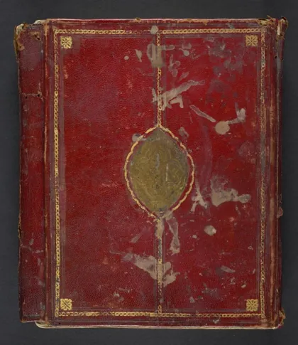

صحيح البخاري
Shahih al-Bukhari
Baca Shahih al-Bukhari (صحيح البخاري) karya Imam al-Bukhari secara gratis di Maktabah Ilmu: teks Arab, Indonesia, Inggris. Tanpa daftar, tanpa iklan.
Buka kitab iniLihat lemari ilmuDaftar isi
- Revelation
- Belief
- Knowledge
- Ablutions (Wudu')
- Bathing (Ghusl)
- Menstrual Periods
- Rubbing hands and feet with dust (Tayammum)
- Prayers (Salat)
- Times of the Prayers
- Call to Prayers (Adhaan)
- Friday Prayer
- Fear Prayer
- The Two Festivals (Eids)
- Witr Prayer
- Invoking Allah for Rain (Istisqaa)
- Eclipses
- Prostration During Recital of Qur'an
- Shortening the Prayers (At-Taqseer)
- Prayer at Night (Tahajjud)
- Virtues of Prayer at Masjid Makkah and Madinah
- Actions while Praying
- Forgetfulness in Prayer
- Funerals (Al-Janaa'iz)
- Obligatory Charity Tax (Zakat)
- Hajj (Pilgrimage)
- `Umrah (Minor pilgrimage)
- Pilgrims Prevented from Completing the Pilgrimage
- Penalty of Hunting while on Pilgrimage
- Virtues of Madinah
- Fasting
- Praying at Night in Ramadaan (Taraweeh)
- Virtues of the Night of Qadr
- Retiring to a Mosque for Remembrance of Allah (I'tikaf)
- Sales and Trade
- Sales in which a Price is paid for Goods to be Delivered Later (As-Salam)
- Shuf'a
- Hiring
- Transferance of a Debt from One Person to Another (Al-Hawaala)
- Kafalah
- Representation, Authorization, Business by Proxy
- Agriculture
- Distribution of Water
- Loans, Payment of Loans, Freezing of Property, Bankruptcy
- Khusoomaat
- Lost Things Picked up by Someone (Luqatah)
- Oppressions
- Partnership
- Mortgaging
- Manumission of Slaves
- Makaatib
- Gifts
- Witnesses
- Peacemaking
- Conditions
- Wills and Testaments (Wasaayaa)
- Fighting for the Cause of Allah (Jihaad)
- One-fifth of Booty to the Cause of Allah (Khumus)
- Jizyah and Mawaada'ah
- Beginning of Creation
- Prophets
… dan 38 bab lainnya.